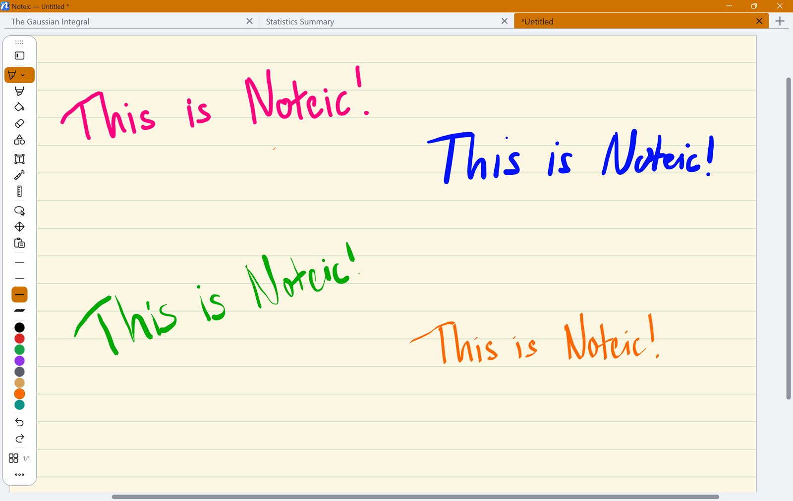

Pens
Three pens with their own feel: ballpoint, fountain pen and calligraphy pen. Each one keeps its own widths, colors and settings.

Choose a pen#
- Tap the pen button in the toolbar. It shows the pen you used last.
- Tap it again, or tap the small arrow at its bottom, to open the pen settings.
- Pick Ballpoint, Fountain pen or Calligraphy. Under each name, a short stroke shows how that pen writes. The menu closes and you can write.
- Ballpoint: an even line. Pressure can be turned on or off.
- Fountain pen: always reacts to pressure.
- Calligraphy: a flat nib at 45°. The line gets thick or thin with the direction of your stroke, not with pressure.
Pen settings#
Below the three pens, the pen menu has its switches:
- Pressure sensitivity (ballpoint and highlighter): press harder for a thicker line. On by default.
- Hold for shape (every pen and the highlighter): hold the pen still at the end of a stroke, and it becomes a clean shape or a straight line. Off by default. See below.
Each pen remembers its own switches.
The side button of your pen can switch to the lasso, the eraser, the highlighter or your previous tool while you hold it, and the pen cursor can show your pen's color and size. With a keyboard, P picks the pen you used last. See Pen and mouse buttons.
Hold for shape#
Draw a shape or a line by hand, and let Noteic clean it up while the pen is still on the page.
- Tap the active pen again to open its menu and turn on Hold for shape.
- Draw a shape or a line. At the end, hold the pen still for about a second.
- The stroke snaps into a clean shape. Lift the pen.
- Closed strokes become a clean rectangle, triangle, ellipse, circle or polygon.
- Open strokes become a straight line. A line that is almost horizontal or vertical snaps exactly horizontal or vertical.
- Arrows and curves: since Noteic 1.8, a hand-drawn arrow becomes a clean arrow, also a double or curved arrow, and with the head drawn as a second stroke. An arc becomes a clean curve. The head keeps the size you drew. This works with the three pens, not with the highlighter.
- Add a corner: after a line has snapped, keep drawing without lifting the pen. Hold again, or lift the pen, and the next piece is straight too.
- The result is ink in the pen you write with, in its color and width. With the calligraphy pen, the line still gets thick and thin with the direction.
- It works with the ballpoint, the fountain pen, the calligraphy pen and the highlighter, with a pen and with the mouse, also in the zoom window.
- Ctrl+Z removes the whole shape.
- Very small strokes, up to about 5 mm, are never turned into a shape, so dots and small letters stay handwriting.
For shapes with fill, line styles and connectors, use the shapes tool.
Faster ink#
Three settings decide how closely the ink follows your pen. You find them under … › Settings › Writing (see Settings). Fast pen tip and Earlier pen input are on from the start.
Fast pen tip#
Windows draws the newest ink right at the tip of your pen, a moment before the ink of Noteic arrives. It only changes what you see while you write, not the finished stroke.
- It works with the ballpoint, the fountain pen and the calligraphy pen, not with the highlighter.
- It needs Windows 11 24H2 or newer and a pen.
- If your PC cannot use it, the switch is grayed out and the row says why: Needs Windows 11 24H2 or newer, Not available on this device, No pen found or Not available with compatible graphics. For compatible graphics, see Support.
Earlier pen input#
Noteic hands new strokes to the ink a few milliseconds sooner. It works with every pen and the highlighter, and may use a little more battery while you write.
Without a pen, the switch is grayed out and the row says No pen found.
Ink prediction#
The ink runs a little ahead of the pen tip. That shortens the visible gap between tip and line, but it can overshoot briefly when you lift the pen. It applies to the three pens, not to the see-through ink of the highlighter.
| Off | No prediction |
|---|---|
| Gentle | 8 ms ahead |
| Full | 16 ms ahead |
| Max | 24 ms ahead |
From the start, Noteic uses Off while Fast pen tip draws the tip, and Gentle otherwise, for example on a PC that cannot use Fast pen tip or when you have turned it off. As soon as you choose a level yourself, that level always applies. A new level takes effect with your next stroke.
Since Noteic 1.8, a level you choose also works at the Fast pen tip: 8, 12 or 15 ms ahead, and up to 10, 15 or 20 ms on quick, straight strokes.
Haptic feedback#
If your pen has haptics, it vibrates briefly when:
- a stroke snaps to the ruler or the protractor,
- the ruler snaps to 0°, 45°, 90° and so on while you turn it with the pen,
- a stroke straightens or turns into a shape with Hold for shape,
- a connector docks to a shape,
- a handle snaps into a step, for example while you rotate a selection with Shift,
- the eraser removes something,
- a zigzag erases something with Scribble to erase,
- a lasso selects something.
Haptic feedback is on from the start. Turn it off under … › Settings › Writing.
- It follows the haptic signals setting in Windows. If haptic signals are off there, the row says Haptic signals are off in Windows.
- Without a pen that has haptics, the switch is grayed out and the row says No haptic pen found, Not available on this device or Needs a newer version of Windows 11.
Widths#
The toolbar shows four widths, each drawn as thick as it writes.
- Tap a width to use it. If another tool is active, Noteic switches back to the pen.
- Tap the active width again to fine-tune it with a slider in millimeters: from 0.1 mm up to 2 mm for ballpoint and fountain pen, and up to 4 mm for the calligraphy nib.
- Switch palette swaps between two sets of widths.
Colors#
Eight colors are in the toolbar; you can show up to twelve under Customize toolbar › Colors (see Customize the toolbar).
- Tap a color to use it.
- Tap the active color again to change it: pick one of 20 color fields. Tap a field again to make it your own with a color field, a hue bar and a Hex box for codes like
#1F78EA; Reset brings back its original color. - Switch palette swaps between three palettes of twelve colors each, per pen.
Pen ink is always fully opaque. For see-through color, use the highlighter or Fill.